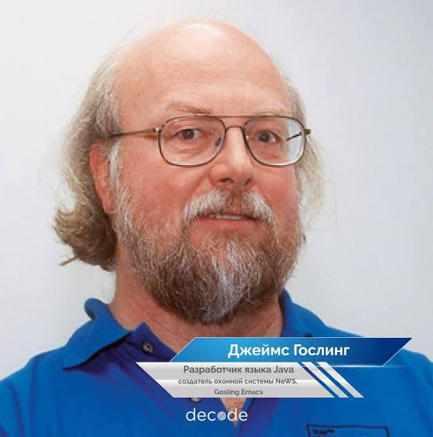

Введение.

Джеймс Гослинг (James Gosling), родился 19 мая 1955 года в Канаде, учёный в области компьютерных наук, один из создателей языка программирования Java , общепризнан как «Отец Java». В 1977 году получил степень бакалавра компьютерных наук в Университете Калгари (Канада), а в 1983 году — степень доктора философии в области компьютерных наук в Университете Карнеги-Меллон (США). Лауреат Премии Тьюринга, удостоен звания иностранного члена Национальной инженерной академии США. Гослинг присоединился к компании Sun Microsystems в 1980-х годах, где руководил разработкой языка Java и его среды выполнения — виртуальной машины Java (JVM). После официального выпуска Java в 1995 году язык получил широкое распространение в веб-разработке и корпоративных приложениях, на протяжении многих лет занимая лидирующие позиции среди самых популярных языков программирования в ежегодных отчётах GitHub. После приобретения компании Sun корпорацией Oracle в 2009 году он покинул компанию в 2010 году и присоединился к компании Liquid Robotics, где занимался разработкой программного обеспечения для морских роботов. В июле 2024 года объявил о выходе на пенсию.
«Одна из самых сложных вещей в жизни — это делать выбор. У меня было трудное время, когда я говорил "нет" ряду превосходных возможностей».